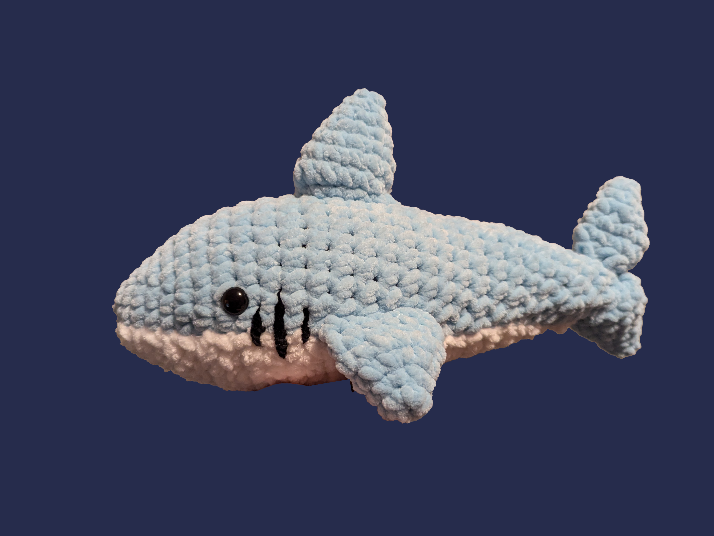
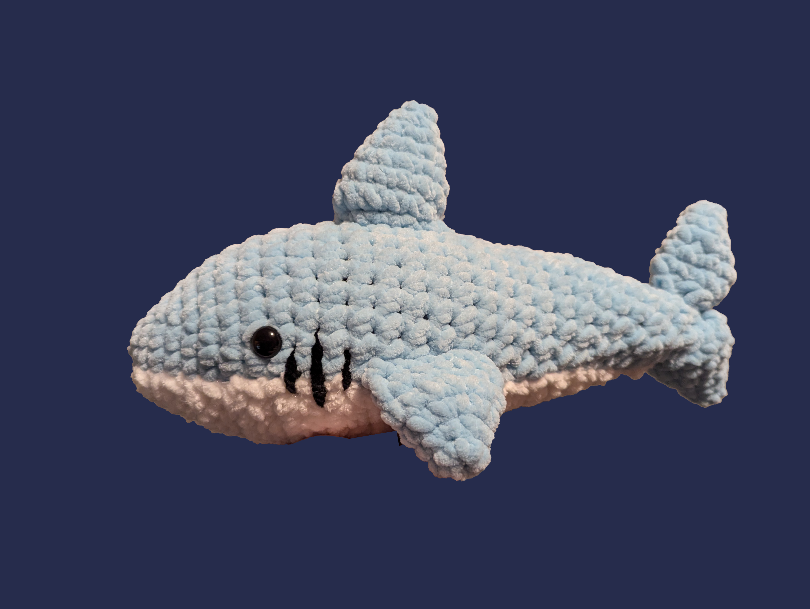

All of the following Items are for sale! If interested in purchasing an item or if you have any questions, please contact me at (my email address) or (my phone number)!
Bunny
This bunny is perfect for cuddling. The arms and ears are very floppy and swing around a lot as you hold it, which makes it fun to play with and pose. This pattern was created by me, and took a few different tries to come up with this final version.

Axolotl
These axolotls are my absolute favorite to make! They are so adorable and only take me a couple of hours to create. They come in endless color variations, which makes them so much more fun and unique. Their pattern was designed and made by me.
 

Dino
This dinosaur is the first stuffed animal I crochet! It is much bigger than my other animals, with a height of 1.5 feet, and a length of 1.75 feet. It is perfect to use as a pillow or even an arm rest when reading a book!
Flamingo
This flamingo has a fun mix of different textured and colored yarns! The legs are very flimsy and dangle as you hold it, which definitely adds to its cute character. This pattern was designed and made by me.
Giraffe
This giraffe is one of my absolute favorite creations. It was a challenge to create the spots on the body, but it turned out to be so much cuter than expected! This pattern was designed and made by me.
Octopus
These octopi are really adorable desk decorations! They are perfect for birthday gifts or even as stocking stuffers. They come in every color imaginable, and take less than 15 minutes to make!